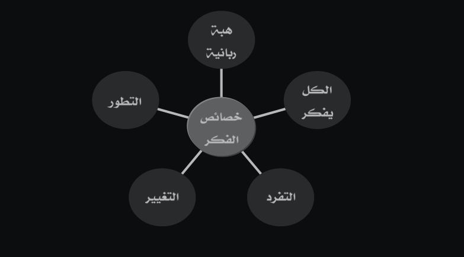
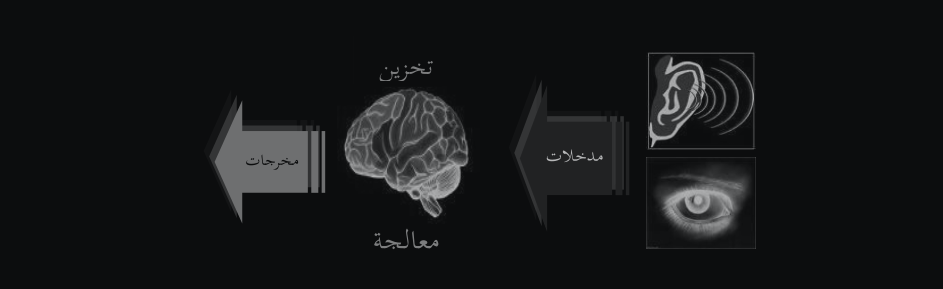
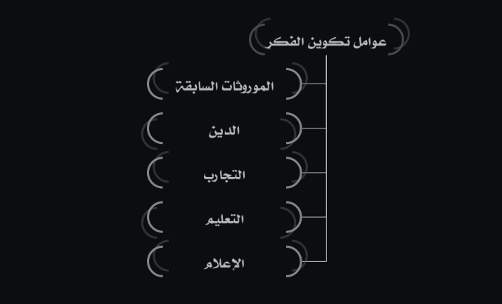
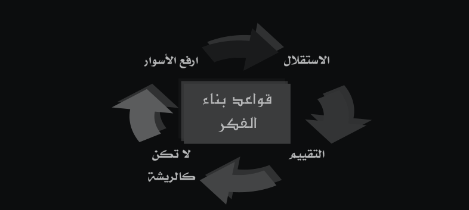
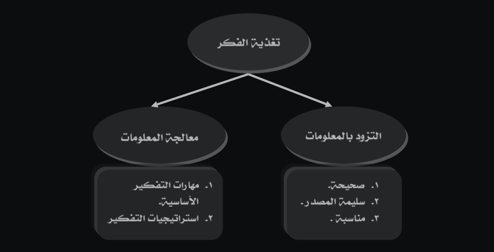
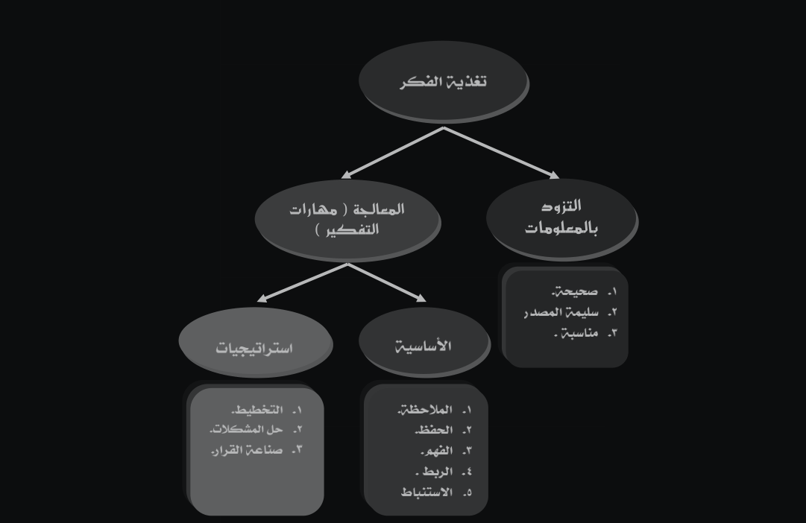
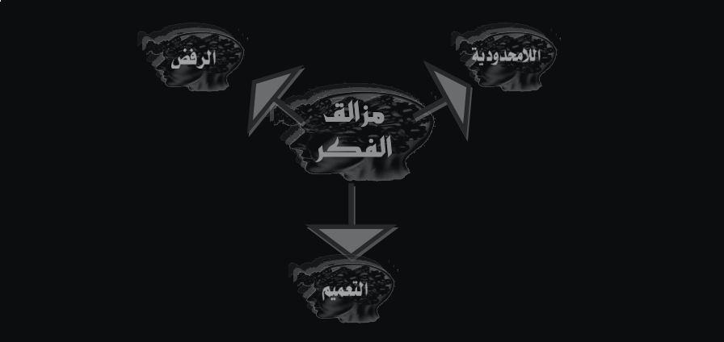
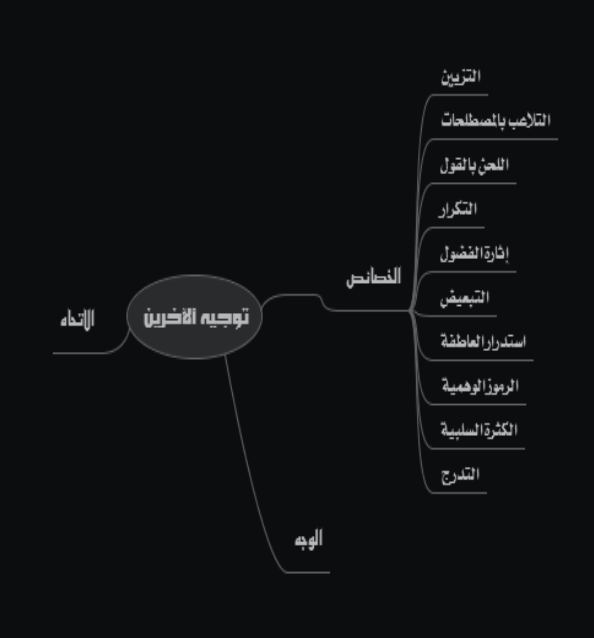
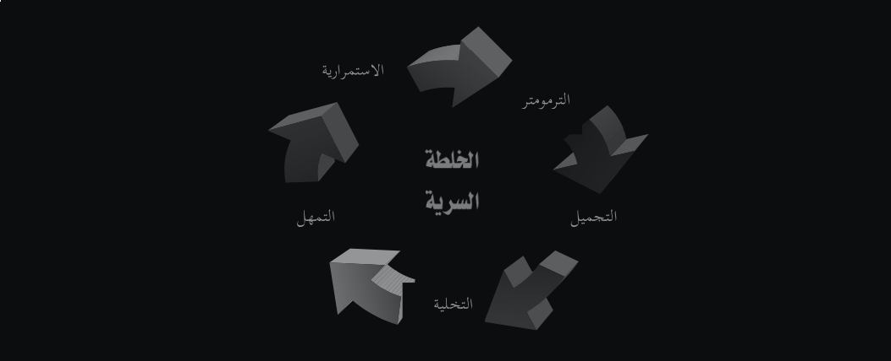
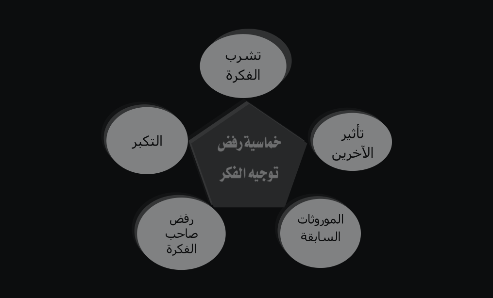

صِنَاعَةُ الفِّكْرِ
قائمة المحتويات
1 تَمْهِيْدٌ
بِسْمِ اللهِ الرَّحمنِ الرَّحيمِ.
الحمدُ للهِ الّذي علَّمَ بالقلمِ علَّمَ الإنسانَ ما لم يعلم، والصّلاةُ والسَّلامُ على المعلِّمِ الأوَّلِ والمرشدِ الأعظم، وعلى آله وصحبه والسَّائرين على الصَّراطِ الأقوم، أمَّا بعد.
فإنَّ من غرائب الأمور في حياتنا أننَّا نمارس التفكير بشكل كبير يوميًّا، ومع هذا كلّه فإن القليل منا يعرف التّفكير، وكيفيّة عمله، وطريقته. والتّفكير هو الأداة الّتي لم نعطها حقها من التّفكير! إن طريقة تفكيرنا غالبًا ما تحدد طريقة حياتنا، بل وتتعدى هذا أيضًا إلى التأثير على طريقة تفكير الآخرين، فأصبحنا نسمع عن غسيل الدِّماغ ومصطلح الإقناع الجَّماهيري، وصرنا نرى نتائجه واضحة جليّة في وسائل الإعلام؛ ومن هنا كانت أهمية موضوع صناعة الفكر، ولمعرفة كيفية صناعة الفّكر، لابد لنا من معرفة الإجابات على هذه الأسئلة:
- ما الفكر والتفكير؟
- كيف أبرز القرآن الكريم أهمية الفكر؟
- ما خصائص الفكر؟
- ما عوامل تكوين الفكر؟
- كيف نستطيع تحصين الفكر؟
- ما هي مزالق الفكر؟
- هل من الممكن السيطرة على فكر الآخرين، وتوجيههم؟
ومن هنا جاءت فكرة هذا الكتّاب، ليجيب فيه على هذه الأسئلة.
أسأل الله أن يكون هذا العمل خالصًا لوجهه الكريم، وأن ينفع به كاتبه، وقارئه، وكل من يطلع عليه.
2 الفِّكرُ وخصائصه
الفِّكرُ لغةً: هو إعمال الخاطر في الشَّيء.
والفكر هو الأداة الّتي وهبها الله - عزَّ وجلَّ - للإنسان لتحقيق رسالته في الأرض، أمَّا التَّفكير فهو العمليّة الّتي تستعمل هذا الفّكر للوصول به إلى نتائج من خلال المقدمات والمدخلات الّتي ندخلها له.
والقرآن الكريم مليء بالحديث عن الفكر والتفكر، فعدد الآيات الّتي تتحدث عن التفكير، والتأمل، والتبصر، والاعتبار (كلها عمليات فكرية) يتجاوز 600 آية - أي ما يصل إلى 10% من مجموع آيات القرآن الكريم.
أمَّا خصائص الفكر، فيمكن إجمالها في خمس خصائص:
2.1 الفِّكْرُ هِبَةٌ ربَّانيَّةٌ
فهو منحة من الله. كما أنه عزَّ وجلَّ جعل التّفكير مناط التّكليف، فمن فقد عقله (أداة التّفكير)، فلا تكليف عليه كما قال عليه الصّلاة والسَّلام: رفع القلم عن ثلاثة: عن النائم حتى يستيقظ، وعن الصبي حتى يحتلم، وعن المجنون حتى يعقل.
2.2 كلُّ إنسانٍ يفكرُ
قد نحكم على بعض النّاس بأنهم لا يفكرون؛ لموقف مرَّ بهم، والحقيقة قد تكون بأن ذلك الموقف لم يدفعهم نحو التفكير، والدليل على ذلك أن هؤلاء النّاس قد تجدهم في موقف آخر يحسنون التّصرف.
2.3 التَّفردُ
فكلّ إنسان متفردٌ بفكره، ولا يمكن الإطلاع على فكره إلا من خلال أربعة طرق، وهنَّ:
- بأن يظهره للنّاس
- بأن يسره عن بعض النّاس، ويظهره لخاصته
- السّرّ الخالص، وهو ما تحدث به نفسك.
- الأخفى، كما في قوله تعالى وَإِن تَجْهَرْ بِالْقَوْلِ فَإِنَّهُ يَعْلَمُ السِّرَّ وَأَخْفَى سورة طه. وقيل الأخفى هو ما لم تحدث به نفسك بعد!
2.4 الفِّكرُ قابلٌ للتغيير
قد يكون تغيير التفكير صعب، ولكنه ليس مستحيلاً، وسيرة رسول الله عليه الصّلاة والسّلام خير شاهد على ذلك.
2.5 الفِّكرُ يتطوَّرُ
وجمود الفكر من أكبر أسباب ضعف التطوير في مختلف جوانب الحياة، كما أن تطوير الفكر من أبرز سمات أهل التقدم بمختلف صوره.
2.6 مختصر فصل الفكر وخصائصه

3 عواملُ تكوينِ الفِّكرِ
لمعرفة هذه العوامل ننظر إلى قول الله عزَّ وجلَّ : وَاللَّهُ أَخْرَجَكُم مِّن بُطُونِ أُمَّهَاتِكُمْ لَا تَعْلَمُونَ شَيْئًا وَجَعَلَ لَكُمُ السَّمْعَ وَالْأَبْصَارَ وَالْأَفْئِدَةَ ۙ لَعَلَّكُمْ تَشْكُرُونَ
فالآية هذه تشير إلى خروج العبد إلى الدّنيا، ومعه ثلاث نعمٍ كبيرةٍ (مع نعمٍ كثيرةٍ أخرى)، وهنَّ:
- السَّمعُ
- الْبَصَرُ
- الفُّؤادُ
وهذه الأدوات الثلاث هنَّ الأدوات الأساسيَّةُ في بناء، وتكوين فكر الإنسان.

وقد أثبتت الدراسات أنَّ الإنسان يتعلم عن طريق الحواس الخمس كالآتي:
- 1% بواسطة حاسة الذوق
- 1.5% بواسطة حاسة اللمس
- 3.5% بواسطة حاسة الشم
- 11% بواسطة حاسة السمع
- 83% بواسطة حاسة البصر
أي 94% عن طريق حاسة السّمع، والبصر.
وعمليّة التّفكير داخل الفؤاد (العقل) تعتمد على عدّة عوامل، منها كم، وكيف المعلومات الواردة إليه، وقد أودع البّاري - سبحانه وتعالى - المخ قدرةً هائلةً على تخزين المعلومات، فقد اكتشف البروفيسور مارك روزنزن أنَّه لو تمَّ تغذية المخ بعشر معلومات في كل ثانية، ولمدة ستين سنة بدون توقف فإن مقدار ما تم تخزينه يعادل أقل من نصف المساحة المخصصة للتخزين!
ومن حكمة الله - سبحانه وتعالى - البالغة أنَّه وهبنا أدوات، ولم يهبنا معلومات، فإن المولود يخرج من بطن أمه إلى الدنيا وصفحة مخه بيضاءٌ خاليةٌ من المعلومات، ثم تبدأ المعلومات تتوافر إليه، ثمَّ يكبر فيبدأ بمعالجة تلك المعلومات، ولعل هذه من إحدى المقاصد الّتي ذكرت في قوله عليه الصّلاة والسّلام : ما من مولود إلاَّ يولد على الفطرة، فأبواه يهودانه، أو ينصرانه، أو يمجسانه…
وبعد هذه المقدمة نرجع إلى الإجابة على السؤال عن أهم عوامل تكوين الفكر لدى الإنسان، ولعل أهم هذه العوامل خمس، وهنَّ:
3.1 الموروثات السابقة
وهي من أهم المصادر لأنها أول المعلومات الّتي تصل إلى المخ، ونتيجة لقوة الطرح، وتكراره تترسخ تلك الموروثات حتى تكاد تصل إلى العقل اللاواعي.
3.2 الدّين
الإنسان متديّن بطبعه، فقل أن تجد مجتمعًا إنسانيًا إلا ولديه عقيدة معينة ودين يدين به، فهناك من يعبد الشمس، والقمر، والشجر، والبقر، والملائكة، والبشر، وغيرها كثر، وكل من قال أنه لا يعبد أحدًا، فهو في الحقيقة يعبد هواه، وشهواته كما قال عزَّ وجلَّ : أَرَأَيْتَ مَنِ اتَّخَذَ إِلَٰهَهُ هَوَاهُ أَفَأَنتَ تَكُونُ عَلَيْهِ وَكِيلًا
ومن مستلزمات الأديان أنها تفرض على اتباعها نظم معينة، وعقائد محددة تجاه الحياة، والناس، والكون؛ وهذا بلا شك يسهم في تشكيل فكر الإنسان، وصياغته بقالب معين، ولو في بعض القضايا، والمحاور.
3.3 التّجاربُ
لكي يعيش الإنسان في هذه الحياة، فلابد له أن يمر بتجارب ومواقف في حياته، ويستفيد من هذه التجارب من جهتين:
- تخزين الموقف، والاحتفاظ به في ذاكرته؛ لاستعادته عند الحاجة
- معالجة هذا الموقف في العقل، والنتائج المترتبة عليه
والعاقل هو الّذي يستفيد من تجارب الآخرين ، وليس بالضرورة أن يوافقهم في نفس طريقة معالجتهم للأمور.
3.4 التّعليم
التّعليم ذو أثرٍ كبيرٍ في البناء الفكريّ للإنسان.
3.5 الإعلامُ
كان يقال "النَّاسُ على دين ملوكهم" وأظنّنا في زمن "النَّاسُ على دين إعلامهم" فإذا كان العبد يقضي في التعليم الزمن الطويل من ساعات عمره، فالإعلام لا يقل عن ذلك بل ربما يزيد عليه، وخاصةً مع الإعلام الجديد. وتكمن خطورة هذا الإعلام الجديد في عدّة أمور أهمها أمرين، وهمَا:
- الرّغبة والدافعية، فالمتلقي من الإعلام يكون مختارًا لا مجبرًا، راغبًا لا رافضًا، محبًا لا كارهًا.
- مخاطبة الإعلام للإنسان من عدة وجوهٍ، فهي تجمع بين الصوت، والصورة، والحركة، والسكون، والعاطفة بطريقة جذابة، وساحرة تجعل الإنسان يتلقى المادة، وتدخل في فكره، وربما تتغلغل حتى تصل إلى عقله اللاواعي، فتشكل فكره، وفق أساليب لا تخطر على باله.
3.6 ملخص عوامل تكوين الفكر

4 قواعدُ بناءِ الفِّكرِ
يمكننا إجمال قواعد بناء الفّكر إلى الآتي:
4.1 كُنْ مستقلاً (لا تعر عقلك لغيرك)
عقلك هبة من الله - عزَّ وجلَّ - لك، فكيف تسلم هذا الكنز إلى غيرك، ليسيرك كما يشاء؟
ويعنى بإعارة العقل الموافقة المطلقة للمقابل، وعدم النّظر، والتأمل فيما يقول أو يفعل، وكأنك عطّلت عقلك، وتفكيرك، وسلّمته إياه على طبق من ذهب، وإعارة العقل هذه هي البوابة الّتي يدخل منها معظم (أو كل) أهل البدع إلى أتباعهم.
4.2 قيِّمْ أفكارَكَ
إن أفكارنا لم تنبت في عقولنا من فراغ أو من لا شيء، وإنَّما جاءت من مصادر متعددة، ومتنوعة، فلابد لنا من مراجعة تلك الأفكار، والنّظر في مصدرها، ومدى مصداقية ذلك المصدر، ومدى الثقة فيما يطرح ويقول، فبعض الأحيان يكون الخبر صحيحًا، ولكن ما يتبعه من تحليل، وتضخيم أو تصوير هو الهدف، فيتغلغل إلى ذهنك مع الخبر الصحيح، فيحصل المقصود.
وحتى لا تكون ضحيّة لأفكار غيرك، فعليك أن تسأل نفسك ثلاثة أسئلة:
- ما مصدر تلك الأفكار؟
- ما مدى ثقة، ومصداقية هذا المصدر؟
- ما الأدلة على صحة تلك الأفكار؟
4.3 لا تكن ريشةً
إن صاحب اليقين الراسخ بما لديه من أفكار لا تهزه الشبهات، والعبارات، والتصرفات بل تزيده ثباتًا بالقناعات، ولذا كان من صفات المؤمنين عدم الريب كما قال سبحانه وتعالى : إِنَّمَا الْمُؤْمِنُونَ الَّذِينَ آمَنُوا بِاللَّهِ وَرَسُولِهِ ثُمَّ لَمْ يَرْتَابُوا
فالعزم، والإقدام، وعدم التردد في الرأي دليل على الثقة، ولذا عد من صفات الرجال:
| صدر البيت | عجز البيت |
|---|---|
| إِذَا كُنْتَ ذَا رَأيٍ فَكُنْ ذَا عَزِيْمَةٍ | فَإِنَّ فَسَادَ الرَّأيِ أَنْ تَتَرَدَّدَا |
إن قوة أدلتك، وتنوعها، ومصداقية مصدرها يجعلك تطمئن وتثق فيها، فتصبح كما قال سبحانه وتعالى : … كَشَجَرَةٍ طَيِّبَةٍ أَصْلُهَا ثَابِتٌ وَفَرْعُهَا فِي السَّمَاءِ
4.4 ارفع الأسوار
أشار ابن القيّم - رحمه الله تعالى - إلى أنَّ صحة القلوب مشابهة لصحة الأبدان، فلابد من تغذية القلب، وحمايته، وتنقيته، وأظن أن صحة الفكر لها المثلث نفسه: التغذية، والحماية، والتنقية.
فعلى العاقل أن يجتهد في حماية فكره، ووقايته بأسوار، وليس بسور واحدة فقط، وعليه في هذا الزمن بالذات رفع الأسوار لعدة أسباب، ومنها:
- نمو المعلومات على مستوى العالم.
- الإغراق في البث الفضائي.
- تزايد عدد الصحف، والمجلات الورقيّة، والالكترونيّة.
ونتيجة لذلك أصبح الإنسان يستقبل يوميًا كمًّا هائلا من المعلومات، والأخبار من مختلف المصادر، والأماكن، والّتي تحمل الغث والسمين، والجميل والقبيح، والصحيح والخطأ؛ وهذه بدورها تسهم في تشكيل فكر الإنسان وبناء شخصيته، ولقد أصبحنا نسمع ونرى لوثات فكرية لم نكن نتوقع أن تكون في مجتمعاتنا، فالحديث عن الشذوذ و الفاحشة و مقارفة المنكرات لا على أنه منكر بل على أنه حرية شخصية و حق إنساني بل وصل الأمر إلى التطاول على الذات الإلهية - تعالى الله عمَّا يقولون - والإلحاد، وعلى ثوابت شرعية معلومة من الدين بالضرورة.
ومن أجل ذلك ينبغي وضع أسوار عملية للحماية الفكرية، ومن أهم هذه الأسوار ثلاثة أسوار، وهنَّ:
4.4.1 السّورُ الأول: ابتعد
عدم التعرض إلى الشبهات، والابتعاد عنها وعن أصحابها استمع إلى قوله سبحانه وتعالى : وَقَدْ نَزَّلَ عَلَيْكُمْ فِي الْكِتَابِ أَنْ إِذَا سَمِعْتُمْ آيَاتِ اللَّهِ يُكْفَرُ بِهَا وَيُسْتَهْزَأُ بِهَا فَلَا تَقْعُدُوا مَعَهُمْ حَتَّىٰ يَخُوضُوا فِي حَدِيثٍ غَيْرِهِ ۚ إِنَّكُمْ إِذًا مِّثْلُهُمْ ۗ إِنَّ اللَّهَ جَامِعُ الْمُنَافِقِينَ وَالْكَافِرِينَ فِي جَهَنَّمَ جَمِيعًا
ومن المهم التنبيه هنا على أن الرد على الشبه وبيان بطلانه واجب، ولكن ليس لكل أحد، وإنما هو لأهل العلم والدراية والتمكن.
4.4.2 السّور الثّاني: ميّز
إذا لم يمكنك الابتعاد فعليك بالتمييز، أي لا تكن أذنًا، قال تعالى : وَمِنْهُمُ الَّذِينَ يُؤْذُونَ النَّبِيَّ وَيَقُولُونَ هُوَ أُذُنٌ ۚ قُلْ أُذُنُ خَيْرٍ لَّكُمْ والأذن هو الّذي يقبل كل ما يقال له. والتمييز بين الحق والباطل إنما يكون بالإيمان، والعلم، والعقل، أي أنك تحتاج إلى مرشحات لما تسمع وترى، وكلما كانت هذه المرشحات دقيقة وسليمه كلما كان التّرشيح والنقاء أفضل والعكس صحيح
4.4.3 السّور الثّالث: لا تسمع بلسانك
فإذا كان السور الثاني يتحدث عن القبول، فهذا السور يتحدث عن ما بعد القبول.
حين أنزل الله براءة أم المؤمنين عائشة - رضي الله عنها - مما اتُهمت به في حادثة الإفك المشهورة، كان مما قاله سبحانه وتعالى : إِذْ تَلَقَّوْنَهُ بِأَلْسِنَتِكُمْ وَتَقُولُونَ بِأَفْوَاهِكُم مَّا لَيْسَ لَكُم بِهِ عِلْمٌ وَتَحْسَبُونَهُ هَيِّنًا وَهُوَ عِندَ اللَّهِ عَظِيمٌ
قال رسول الله - صلى الله عليه وسلم -: "كفى بالمرء كذبا أن يحدث بكل ما سمع"، بل جاء وعيد شديد في ذلك فقد قال عليه الصلاة والسلام: "وإن العبد ليتكلم بالكلمة من سخط الله، لا يلقي لها بالا، يهوي بها في جهنم"
وهكذا تكون الأسوار الثلاثة هي الواقية - بإذن الله - فعليك بالعناية بها وترميمها ورفعها.
4.5 ملخص قواعد بناء الفكر

5 تغذيةُ الفِّكرِ
إن الإنسان يمكن أن يموت جسديًا:
- إذا لم يأكل خلال بضعة عشر يومًا.
- إذا لم يشرب الماء خلال ثلاثة أيام.
- إذا لم يتنفس خلال دقائق.
وكذلك الفكر أيضًا.
والآن لنسأل أنفسنا هذه الأسئلة التّالية:
- ما مدى أهمية تغذية الفكر؟
- ماذا لو انتشر التّلوث الفكري، وأصبح وباء؟
- أيهما أهم: التّغذية الجسدية أم التّغذية الفكرية؟
5.1 كيف أستطيع تغذية فكري؟
إذا كان الفكر هو جهد ذهني يقوم به الدماغ نتيجةً لمؤثر ما، فإن تغذية الفكر تكون بركنين أساسيين وهما:
5.1.1 التّزود بالمعلومات
إن الأساس في أي عملية هو المعلومات الّتي تتوفر لديك عن هذه العملية، وكلما كانت المعلومات أكثر وأوفر، كلما كانت رؤيتك أوسع وأشمل، وصار قرارك أقرب للصواب، ومعالجتك أحسن في النتائج، والعكس صحيح. وممَّا يجب التنبيه عليه هو أنّه ليس المطلوب هو جمع المعلومات بأي شكل ومن أي مصدر، وإنما المقصود هي المعلومات التي تنطبق عليها هذه الشروط الآتية:
- صحّة المعلومة
- سلامة مصدرها
- مناسبة للطرح: فليست كل معلومة مناسبة لكل فرد، وزمان، ومكان. اسمع قول عليٍّ - رضي الله عنه وأرضاه -: حدِّثوا النَّاس، بما يعرفونَ. أتحبون أن يكذَّبَ، الله ورسوله؟
5.1.2 معالجة المعلومات
وَفِي الْأَرْضِ قِطَعٌ مُّتَجَاوِرَاتٌ وَجَنَّاتٌ مِّنْ أَعْنَابٍ وَزَرْعٌ وَنَخِيلٌ صِنْوَانٌ وَغَيْرُ صِنْوَانٍ يُسْقَىٰ بِمَاءٍ وَاحِدٍ وَنُفَضِّلُ بَعْضَهَا عَلَىٰ بَعْضٍ فِي الْأُكُلِ ۚ إِنَّ فِي ذَٰلِكَ لَآيَاتٍ لِّقَوْمٍ يَعْقِلُونَ
فالماء واحد، ولكن الناتج منه يختلف اختلافًا كبيرًا، وقس على هذا الفكر، ولنفرض بأننا مررنا معلومة على مجموعة من النّاس، فستجد اختلافًا بينهم في معالجة هذه المعلومة، والتعامل معها، حتى أنك قد لا تجد شخصين يتفقان في تفسير موقف واحد أو التعبير عن قضية واحدة، وإن كانا عاشا في الظروف نفسها.
إن هذه القضية تقودنا إلى أمور مهمة بل في غاية الأهمية، وهنَّ:
- ما المهارات الّتي يتعامل معها العقل البشري في معالجته للمعلومات؟
- هل يمكن اكتساب تلك المهارات وتطويرها؟
- هل بإمكاننا توجيه تلك المهارات للخروج بالنتائج المطلوبة؟
أي أننا نتحدث عن مهارات التفكير ذلك العلم القديم الجديد، ولما كانت مهارات التفكير كثيرة ومتنوعة، فقد صنف فيها الكثير من الغرب والشرق، ولكل طريقته، وسنقتصر هنا في تقسيمها إلى نوعين، وهمَا:
5.1.2.1 مهارات التّفكير الأساسية
وهي مجموعة من المهارات الّتي تعتبر المنطلق الأساسي والقاعدة لما بعدها، ومن أهم تلك المهارات:
5.1.2.1.1 مهارة الملاحظة
والملاحظة هي أم المهارات ورافدها الأساسي، وهي تعني استخدام حاسة أو أكثر من الحواس الخمس في التعرف على خصائص الأشياء.
5.1.2.1.2 مهارة الحفظ
وهي من المهارات المهمة، والضرورية لكل إنسان، فبها يستحضر الإنسان ما شاء من العلوم أينما كان، وقال الإمام الشَّافعيُّ - رحمه الله تعالى -:
| صدر البيت | عجز البيت |
|---|---|
| عِلْمِي مَعِي حَيْثُ مَا يَمَّمْتُ أَحْمِلُهُ | قَلْبِي وِعَاءٌ لَهُ لاَ بَطْنُ صُنْدُوقِ |
| إِنْ كُنْتُ فِي الْبَيْتِ كَانَ العِلْمُ فِيهِ مَعِي | أَوْ كُنْتُ فِي السُّوقِ كَانَ العِلْمُ في السُّوقِ |
5.1.2.1.3 مهارة الفَّهم
وهيَّ أعلى المهارات في سلم مهارات التفكير، وهي تعني إدراك ما وراء المعلومة أو الموقف، والوصول إلى نتائج غير ظاهرة مباشرةً
5.1.2.1.4 مهارة الرَّبط
وتعني مهارة ربط معلومة بمعلومة أخرى، لتوضيح المعنى، وإزالة الإشكال، أو من أجل استنتاج معلومة جديدةـ بطريقة علمية، وعقلية، وبدون تكلف.
وثمار هذه المهارة كثيرة، ومنها:
- التفسير والإيضاح: وتعني تفسير نص من نص آخر، مثل تفسير القرآن بالقرآن - وهذا أفضل التفاسير.
- الاستنتاج: وتعني ربط معلومتين والحصول منهما على معلومة جديدة.
- المقارنة: وتعني النظر في أمرين وملاحظة ما بينهما من عناصر مشتركة وعناصر مختلفة، للحصول من خلال ذلك على معطيات جديدة.
5.1.2.1.5 مهارة الاستنباط
وهي مهارة تعنى بالوصول إلى معلومة جديدة عن طريق استنباطها من معلومة موجودة مسبقًا.
5.2 ملخص تغذية الفكر

6 استراتيجيات التَّفكير
ومن أهم الاستراتيجيات الّتي يحتاج إليها الإنسان في حياته اليومية، ثلاث وهنَّ:
- التخطيط
- حل المشكلات
- إدارة القرار
6.1 التَّخطيط
وهو رسم الطّريق لتحقيق هدف مطلوب، ولا تخطيط بلا أهداف، ولا تحقيق لهذه الأهداف دون طريق تسير عليه، والتخطيط الناجح يحتاج إلى عنصرين أساسيين:
- الهدف: ومن أهم معايير الهدف الجيد أنه طموح، وواضح، وقابل للقياس.
- الوسائل: أكثرها فاعليّة، وأعلاها كفاءة
وهذان العنصران يحتاجان إلى ملاحظة، واستنتاج، كما أن سلوك الطريق يحتاج إلى إرادة، وصبر - وهذا كله من المهارات الأساسية.
6.2 حل المشكلات
الحياة لا تخلوا من المشاكل، والعاقل هو الّذي يسعى إلى التجهز لمواجهتها، ولحلها، أو توظيفها لتصب في تحقيق أهدافه، وقد وضعت العديد من الاستراتيجيات للتعامل مع المشاكل، وإذ ما أجملناها فإنها تعود في الغالب إلى هذه الخطوات:
- ملاحظة مظاهر المشكلة بطرق علمية وعدم الاكتفاء بالملاحظات الشخصية أو العاطفية.
- تحديد المشكلة بدقة.
- اختيار أفضل حل بعد طرح مجموعة من الحلول.
- تطبيق الحل.
- تقييم الحل ومدى معالجته للمشكلة.
6.3 إدارة القرار
من المهم أن تتخذ قرارًا، ولكنَّ الأهم أن يكون القرار صحيحًا، ومؤثرًا وايجابيًا، فاتخاذ القرار ليس هدفًا بذاته، ولكنه وسيلة لتحقيق مصلحة معينة، وحتى يكون قرارك صحيحًا، فعليك مراعاة الآتي:
- الهدف من القرار.
- التَّوقيت.
- من سيقع عليه هذا القرار، ومقدرته على تطبيقه، وقيل "إذا أردت أن تُطَاعَ، فامُرْ بالمستطاعِ"
ومن أفضل الشواهد على صناعة القرار حادثة بني قريظة الّذين نقضوا فيها العهد الّذي بينهم وبين المسلمين… ومن تلك الحادثة نستخلص خطوات مهمّة لكيفية تعامل نبي الله عليه الصلاة والسلام معها:
- التأكد من صحة الخبر.
- استقبال الأزمة بروح ايجابية.
- عدم نشر الخبر السلبي وإعلان الإيجابي
- المبادرة بعمل يظهر عكس ما يريده مثيرو الأزمة.
7 ملخص شامل لتغذية الفكر

8 مزالق الفكر
وبعد أن أدركنا أهمية الفكر، وكيفية بنائه، فلابد لنا من تبيين مزالقه، ومخاطره، وهي عديدة وسنذكر أهمها:
8.1 اللامحدودية
ولما كان مصدر العقل هو الحواس، وهذه الحواس محدودة، فكذلك العقل، فلا تقحمه فيما لا سبيل لمعرفته بالعقل، فالعلم ثلاثة أنواع:
- الّذي يعرف بالعقل
- الّذي لا تحصل المعرفة به إلاّ بالسمع
- ما لا سبيل إليه لا بعقل ولا بسمع
ومن صور الأمر بالوقوف عن التفكير، وعدم الاسترسال قوله عليه الصّلاة والسّلام : "يأتي الشيطان أحدكم فيقول: من خلق كذا، من خلق كذا، حتى يقول: من خلق ربَّك؟ فإذا بلغه فليستعذ بالله ولينته"
8.2 الرفض
فلا قبول إلا على قناعة، مهما كان المصدر، ومهما كانت المعلومة، فما لا يدركه بعقله يرفضه أو يحاول تحويره وتحويله إلى ما يقبله، ووصل المزلق هذا إلى درجة أننا سمعنا من يشكك أو يرفض قبول بعض الأحاديث الصحيحة والصريحة مثل قوله عليه الصّلاة والسّلام : "إذا وقع الذّباب في شراب أحدكم، فليغمسه ثم لينزعه، فإن في إحدى جناحيه داءـ والأخرى شفاء" وعلة الرفض أن هذا غير مقنع؛ لأن العلم الحديث لم يثبت الداء والدواء في جناحي الذباب! ومثل أولئك لم يدركوا حقيقة ما لديهم من نعم، فهناك الكثير مما يؤمن به البشر ولم يروه ولم يدركوه، فالكل يعرف النوم ويدركه، والكل يؤمن بالموت ووقوعه، وهذه وتلك لم يعرف حقائقها البشر حتى الآن، فهل نرفضها حتى يثبتها العلم الحديث؟
8.3 التعميم
من أخطر القضايا الّتي ينزلق فيها الفكر هي التعميم المبني على موقف أو كلام أو حدث، فينسى فيها المعمم أن لكل موقف ظروفه، ولكل إنسان خصائصه، ولكل كلام مبرراته، وما ينطبق على ذلك الموقف أو الشخص ليس بالضرورة ينطبق على غيره. إن التعميم ينافي العدل، فلا ينبغي أن يُؤخذ أحد بجريمةِ غيره.
8.4 ملخص مزالق الفكر

9 توجيه الآخرين
المقصود هنا بيان الطرق والأساليب المستخدمة في توجيه الآخرين، والسعي في توظيفها في الخير، وتحقيق مقاصد الشريعة، والوسائل ليست وليدة الساعة، ولكنها نتائج خبرات بشرية طويلة، وستتضح تلك الأساليب ومدلولاتها من خلال الوسائل العشر في توجيه الآخرين.
والإنسان لكي تستطيع توجيهه إلى فكر معين، وطريق محدد، فعليك بهذه الثلاثة:
9.0.0.1 معرفة طبيعة الإنسان، وخصائصه، ومداخله
وهذه الخصائص إنما تدرك بإحدى هاتين الوسيلتين أو كليهما:
- ما تحدث به خالق الإنسان عن الإنسان، ومن ذلك قوله عزَّ وجلَّ : زُيِّنَ لِلنَّاسِ حُبُّ الشَّهَوَاتِ مِنَ النِّسَاءِ وَالْبَنِينَ وَالْقَنَاطِيرِ الْمُقَنطَرَةِ مِنَ الذَّهَبِ وَالْفِضَّةِ وَالْخَيْلِ الْمُسَوَّمَةِ وَالْأَنْعَامِ وَالْحَرْثِ ۗ ذَٰلِكَ مَتَاعُ الْحَيَاةِ الدُّنْيَا ۖ وَاللَّهُ عِندَهُ حُسْنُ الْمَآبِ
- الدّراسة البشرية، والتجارب الإنسانية.
9.0.0.2 اتجاهات الإنسان
وهذه الاتجاهات تختلف من مجتمع إلى آخر، ويمكن معرفتها عن طريق الدراسات، والملاحظات الدقيقة.
9.0.0.3 الاتجاه المطلوب
وهي الثّمرة الّتي يسعى إليها من يستخدم التّوجيه.
الوسائل العشرة في معرفة النّفس البشريّة وفق كتاب ربِّ البريّة:
9.1 التّزيين
كَذَٰلِكَ زُيِّنَ لِلْكَافِرِينَ مَا كَانُوا يَعْمَلُونَ
وَإِذْ زَيَّنَ لَهُمُ الشَّيْطَانُ أَعْمَالَهُمْ وَقَالَ لَا غَالِبَ لَكُمُ الْيَوْمَ مِنَ النَّاسِ
وَكَذَٰلِكَ زُيِّنَ لِفِرْعَوْنَ سُوءُ عَمَلِهِ وَصُدَّ عَنِ السَّبِيلِ ۚ وَمَا كَيْدُ فِرْعَوْنَ إِلَّا فِي تَبَابٍ
9.2 التّلاعب بالمصطلحات
كل لفظة له مدلولها، ولها تأثيرها على النفس، ومن أجل تغيير القناعات بالفكرة وقبولها يستخدم تغيير المصطلحات والكلمات، ليقل تأثيرها على النفس أو يتحول إلى تأثير ايجابي بدل السلبي، ومن ذلك:
- الخمر = مشروب روحي
- الشّاذ = مثليّ
- الربا = فوائد
- الزنا، الدياثة… = حريّة شخصيّة
ومع الوقت تصبح المصطلحات الجديدة هي السائدة، وتضييع المصطلحات الأصلية ومعها يمحى التأثير السلبي لتلك المصطلحات، فيصبح من يمارس تلك الأعمال مقبول بل وربما محبوب وممدوح.
9.3 اللّحن بالقول
اللّحن هنا هو القدرة على تحوير الكلام، والذهاب به إلى ما يريد المتحدث، ومنه جاء في الحديث "… إنما أنا بشر، وإنكم تختصمون إلي، ولعل بعضكم أن يكون ألحن بحجته من بعض، وأقضي له على نحو مما أسمع، فمن قضيت له من حق أخيه شيئًا فلا يأخذه، فإنما أقطع له قطعة من النار" وما نشاهد من تحليلات، ومناظرات، وحوارات خير شاهد على ذلك، فالأخبار واحدة، ولكن لكل قناة تحليلها والّذي تسعى من خلاله إلى إيصال رسالتها وزرعها في ذهن المشاهد، وتستخدم في ذلك اللحن في القول، كما أنها تستضيف وتحاور من يرسخ مبادئها، وما تسعى إليه، وكل هذا دون أن يشعر المتلقي بذلك؛ وتلك هي خطورة اللحن.
9.4 التَّكرار
من أخطر الوسائل وأكثرها تطبيقًا على جميع المستويات، وفي مختلف المجالات نظريّة كذِّب، كذِّب حتى تُصدَّقَ إن تكرار أي قضية يعطي رسالة في العقل اللاواعي ويرسخ المعلومة في العقل الواعي، ويدفع صاحبها إلى تبني موقف أو قول، ويدافع عنه بشدة، ويرد كل من ينكر هذا القول أو يستهجن ذاك الفعل.
ومن المهم التّفريق بين التكرار والنسخ، فالنسخ إعادة المعلومة بالطريقة نفسها أما التّكرار فهو إعادة المعلومة أو القضية بطرق مختلفة ومتنوعة.
9.5 إثارة الفضول
وَقَالَ مَا نَهَاكُمَا رَبُّكُمَا عَنْ هَٰذِهِ الشَّجَرَةِ إِلَّا أَن تَكُونَا مَلَكَيْنِ أَوْ تَكُونَا مِنَ الْخَالِدِينَ
من الدوافع الغريزية للإنسان حب الفضول، والسعي في اكتشاف المجهول، والحرص على معرفة الممنوع، فتفاصيل الأحداث ودوافعها قد تخفى، وحينها تبدأ رحلة البحث، وحب الحصول على المجهول مما يعطي الفرصة لقبول ذلك المجهول من أي مصدر، وبأي شكل لإشباع الفضول، ومن هذا الباب تدخل الكثير من القيم، والمبادئ دون أن يشعر المتلقي، فهناك الكثير من الأحداث والوقائع الّتي لا يستطيع الفرد معرفة حقائقها، ودوافعها، فيخرج لنا المحلّلون؛ ليضعوا النقاط على الحروف - ومن المتفق عليه أن من يضع النقاط هو من يجعل الكلمة تقرأ كما يريد.
والمتأمل في حياته سيلاحظ الكم الهائل من الحقائق والنظريات التي تصرف عن أساسها، فيبني موقفه على ضوء تحليلها، وتبرير دوافعها لا على أصلها.
9.6 التَّبعيض
إن قضية التّبعيض خطيرة جدًا، وقد يغفل عنها الكثير من النّاس، والتبعيض هو أن تنظر إلى جزء من المسألة، وتغضَّ (أو يغيب عنك) النّظر إلى الجزء الآخر، فالنتيجة هي صورة مشوّهة، ناقصة، ومن هنا كانت العقوبة الربّانيّة في الدارين لمن يقوم بهذا : أَفَتُؤْمِنُونَ بِبَعْضِ الْكِتَابِ وَتَكْفُرُونَ بِبَعْضٍ ۚ فَمَا جَزَاءُ مَن يَفْعَلُ ذَٰلِكَ مِنكُمْ إِلَّا خِزْيٌ فِي الْحَيَاةِ الدُّنْيَا ۖ وَيَوْمَ الْقِيَامَةِ يُرَدُّونَ إِلَىٰ أَشَدِّ الْعَذَابِ ۗ وَمَا اللَّهُ بِغَافِلٍ عَمَّا تَعْمَلُونَ
9.7 استدرار العاطفة
العاطفة جزء أساسي ومهم من الإنسان، وكلما كانت العاطفة عند الإنسان قويّة كان اندفاعه، وبذله، وتحمله، أكبر والعكس صحيح. وعليه إذا أردت دفع الإنسان نحو عمل معين ما عليك إلا بناء عاطفته اتجاه هذا الموضوع، وبناء العاطفة يعتمد على أمرين:
- معلومات مقننة.
- إدراك طبيعة المشاعر البشرية.
ولقد أدرك ذلك، بعض البشر، فأوغلوا في ترسيخ العواطف، والمشاعر تجاه قضايًا معينة بحسب ما يريدون وبأساليب متنوعة، وكثيرة، والنتيجة الطبيعية هي الحركة البشرية لحل هذه القضية، ومن هنا يُقدَّمُ لهم الحل (المجهز مسبقًا) فيقبله الناس حتى ولو كان مرفوضًا عقلاـ وشرعًا، وعرفًا.
9.8 الرّموز الوهميّة
عن أبي هريرة - رضي الله عنه - أن رسول الله - صلّى الله عليه وسلم - قال: "إن بين يدي الساعة سنين خدّاعة، يصدق فيها الكاذب، ويكذب فيها الصادق، ويؤتمن فيها الخائن، ويخوَّن فيها الأمين، وينطق فيها الرويبضة. قيل: وما الرويبضة؟ قيل: المرء التافه يتكلم في أمر العامة."
ولم يكن لهذا الرويبضة أن يتكلم إلا حين أُعطيَ الفرصة وأخذ ما ليس له فيه حق، وإلا فلو أيقن النّاس أنه رويبضة لما استمعوا له.
فمن يرفعه الإعلام ويبرزه ويظهره بالصورة الملمّعة البراقة المشرفة سيكون هو الرمز، والمتأمل في واقعنا يرى ذلك جليًّا واضحًا، فلو سألت الشباب عن مثلهم الأعلى لقال لك أغلبهم: الفنان، اللاعب، المغني الفلاني…
والسبب في ذلك هو الدور الإعلامي في إظهار هذه الشخصيات من حيث المقابلات وتعظيم الإنجازات الوهمية وتحويلها إلى إنجازات وطنية وعالمية بالإضافة إلى الضخ المالي عليهم ولهم، وملاحقتهم بالأضواء في كل حركة وسكنة، فمن الطبيعي تقليدهم في ملبسهم… إلخ، فهم الرموز الوطنية، والنماذج الإنسانية، فهل تستغرب بعد ذلك أن يتحدث هؤلاء في أمور العامة؟!
9.9 الكثرة السّلبيّة
من طبيعة الإنسان أن ينظر إلى الكثرة على أنها صحيحة أو حق دون التأمل في الجوانب الأخرى لذا جاء الشارع الحكيم في معالجة هذه القضية وتصحيح النّظر إليها، فقال سبحانه وتعالى : قُل لَّا يَسْتَوِي الْخَبِيثُ وَالطَّيِّبُ وَلَوْ أَعْجَبَكَ كَثْرَةُ الْخَبِيثِ وقال : وَإِن تُطِعْ أَكْثَرَ مَن فِي الْأَرْضِ يُضِلُّوكَ عَن سَبِيلِ اللَّهِ ۚ إِن يَتَّبِعُونَ إِلَّا الظَّنَّ وَإِنْ هُمْ إِلَّا يَخْرُصُونَ
فمع الضخ الكبير والكم الوفير تصبح هناك قناعة لدى المتلقي بأن هذا الموضوع حق، وأن تلك القضية صحيحة، وأن الحل هو بالشكل الفلاني؛ فقد ذكره فلان، والمؤسسة الفلانية، والمركز الفلاني، وهكذا تصل تلك الرسائل وتستقر في الأذهان فتكون نتيجتها التسليم والقعود.
9.10 التَّدرج
إن النَّفس البشرية ترفض التغيير المفاجئ ولا تستجيب له إلا في أضيق الحدود، فمن الصعب جدًا أن تغير الفكر بسرعةـ فلابد من التأني والصبر والقبول بالقليل للحصول على الكثير، وقد قيل الزمن جزء من العلاج ومن استعجل الثمر قبل أوانه عوقب بحرمانه.
9.11 ملخص توجيه الآخرين

10 مثلت تغيير الفكر
- تغيير الفكر يعني الديمومة - غالبا -، فمرض الأفكار الشبهات أفتك من مرض الشهوات.
- ردة الفعل عادة تكون قوية، لذا يجب الحرص على عدم الخطأ
- الإخفاق في وقت ما لا يعني الفشل الدائم، بل يعني أن الخلطة غير مناسبة أو أنها استخدمت في الوقت الخطأ
والآن بعد تجهيز المواد لنبدأ في صناعة الخلطة، وفق الخطوات التالية:
10.1 الترمومتر
وهي قياس مؤشر قبول الفكرة لدى المستهدفين، ومن الطرق المستخدمة في ذلك بث بعض الأفكار، وجس النبض حيال ردّة فعلهم.
10.2 تجميل الفكرة
بالتمهيد لها من خلال الرموز الوهمية، والتلاعب بالألفاظ، والإيهام بأن الكثرة مع هذه الفكرة، مع إثارة الفضول في بعض القضايا.
10.3 التّخلية
وهي محاولة إبعاد كل فكرة معارضة، وتوظيف التبعيض في بيان سلبيات هذه الأفكار المعارضة، وتسليط الضوء على نقاط ضعفها حتى لو كانت غير صحيحة.
10.4 التّمهل
وهي إضافة الفكرة الجديدة بصورة متدرجة ودون شعور عدائي، ويتم ذلك من خلال التكرار، وتوظيف الرموز، واستدرار العاطفة.
10.5 الاستمرارية
وتعني ضمان بقاء الفكرة ، وتجذرها، وضمان الحصول على ثمارها؛ الّتي مع الوقت ستنقل الفكرة من العقل الواعي إلى اللاواعي حتى تصبح قيمة من قيم المتلقي فلا يقبل التنازل عنها.
10.6 ملخص هذه الخلطة السرية

11 عوائق توجيه الفكر
أهم هذه العوائق خمسة هنَّ:
11.1 تشرب الفكرة
قال رسول الله عليه الصّلاة والسَّلام: "تعرض الفتن على القلوب كالحصير عودًا عودًا. فأي قلب أشربها نكت فيه نكتةً سوداءً، وأي قلب أنكرها نكت فيه نكتة بيضاء. حتى تصير على قلبين، على أبيض مثل الصفا، فلا تضره فتنة ما دامت السماوات والأرض. والآخر أسود مرباد، كالكوز مجخيا لا يعرف معروف ولا ينكر منكرا. إلا ما أشرب من هواه."
وهذا واضح جدًا عند أصحاب الرسالات والمبادئ، فهو يدافع ويناضل من أجل فكرته لقوة قناعته بها، حتى ولو وصل الأمر إلى الموت من أجلها، ويعتبر موته انتصارا، قال الشهيد عبدالرحيم محمود في مطلع قصيدته الشهيد:
| صدر البيت | عجز البيت |
|---|---|
| سَأَحْمِلُ رُوْحِي عَلَى رَاحَتِي | وَأُلْقِي بِهَا فِيْ مَهَاوِي الرَّدَى |
| فَإِمَّا حَيَاةٌ تَسِرُّ الصَّدِيْقَ | وَإِمَّا مَمَاتٌ يُغِيْظُ العِدَى |
11.2 تأثير الآخرين
"لما حضرت أبا طالب الوفاة، جاءه رسول الله - صلى الله عليه وسلم -، فوجد عنده أبا جهل وعبدالله بن أبي أمية بن المغيرة، فقال: أي عم، قل لا إله إلا الله، كلمة أحاج لك بها عند الله. فقال أبو جهل وعبدالله بن أبي أمية: أترغب عن ملة عبدالمطلب، فلم يزل رسول الله يعرضها عليه، ويعيدانه بتلك المقالة، حتى قال أبو طالب آخر ما كلَّمهم: على ملة عبدالمطلب، وأبى أن يقول: لا إله إلا الله."
لم يكن بين أبي طالب ودخول الجنة إلا قول كلمة، لكنه رفض ذلك بسبب تأثير الآخرين، لا لعدم قناعته بدعوة محمّد عليه الصّلاة والسّلام، فمما قاله في لاميته الشهيرة:
| صدر البيت | عجز البيت |
|---|---|
| فَوَ اللهِ لَوْلاَ أَنْ أَجِيْءَ بِسُبَّةٍ | تُجَرُّ عَلَى أَشْيَاخِنَا فِيْ الْمَحَافِلِ |
| لَكُنَّا تَبِعْنَاهُ عَلَى كُلِّ حَالَةٍ | مِنَ الدَّهرِ غَيْرَ قَوْلِ التَّهَازُلِ |
| لَقَدْ عَلِمُوا أَنَّ ابْنَنَا لاَ مُكَذَّبٌ | لَدَيْنَا وَلاَ يُعْنَى بِقَولِ الأَبَاطِلِ |
11.3 الموروثات السابقة
وَكَذَٰلِكَ مَا أَرْسَلْنَا مِن قَبْلِكَ فِي قَرْيَةٍ مِّن نَّذِيرٍ إِلَّا قَالَ مُتْرَفُوهَا إِنَّا وَجَدْنَا آبَاءَنَا عَلَىٰ أُمَّةٍ وَإِنَّا عَلَىٰ آثَارِهِم مُّقْتَدُونَ
11.4 رفض صاحب الفكرة
كرفض أبو جهل رسالة النبيّ، لكونه من بني عبد مناف، وهو من بني عبد مخزوم.
11.5 التَّكبر
قَالَ مَا مَنَعَكَ أَلَّا تَسْجُدَ إِذْ أَمَرْتُكَ ۖ قَالَ أَنَا خَيْرٌ مِّنْهُ خَلَقْتَنِي مِن نَّارٍ وَخَلَقْتَهُ مِن طِينٍ
11.6 ملخص عوائق توجيه الفكر

12 الخاتمة
اللهم أرنا الحق حقًا، وارزقنا اتباعه، وارنا الباطل باطلا، وارزقنا اجتنابه، ولا تجعله ملتبسًا علينا فنضلّ، واجعلنا للمتّقين إماما. — الصَّحابيُّ الجَّليلُ عُمَرُ بنُ الخطَّاب.